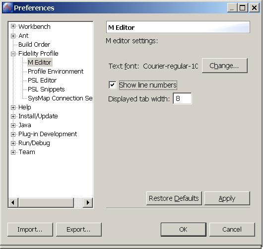
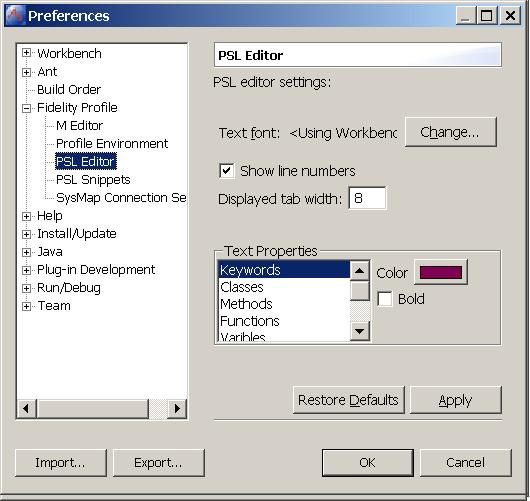
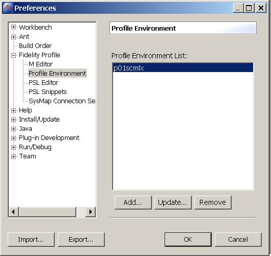
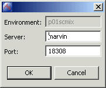
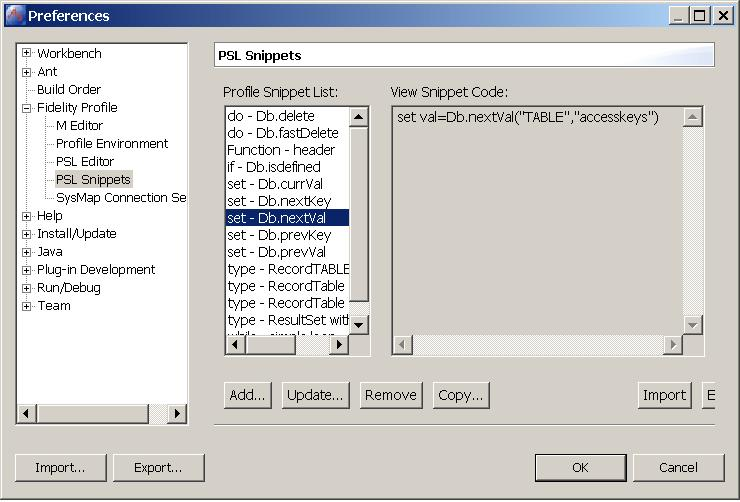
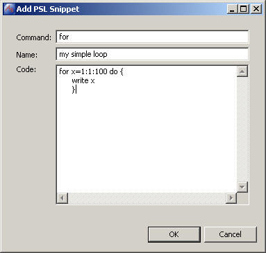
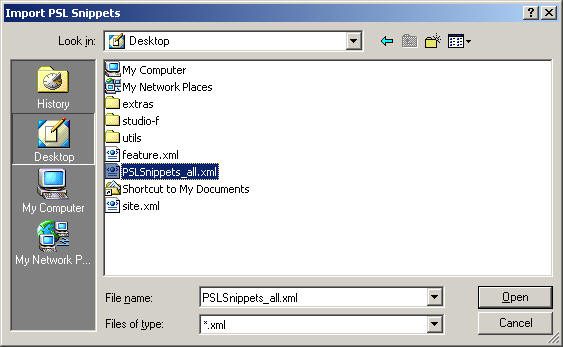

The Fidelity Profile Development preferences menu provides the ability to configure the M editor. The font, tab size and line numbers in the editors can be changed.

The Fidelity Profile Development preferences menu provides the ability to configure The PSL Editor.

The Profile environment preferences page provides the ability to Add, Modify and Remove Fidelity Profile RTE entries to be used in Projects.

You can add, update and remove Fidelity Profile runtime environments by clicking on the respective buttons.

The PSL Editor supports dynamic look-up and insertion of code snippets. You can add, update, remove, copy, import and export PSL snippets in the PSL Snippets preferences page. Refer to the Using PSL Snippets section on the PSL Editor help page.

Use the Add, Update, Remove and Copy buttons to manage your snippets.
In the add snippet dialog window, enter the Command that will be used in the snippet lookup. For example, PSL commands like type and for. The name field is used to describe the snippet in some detail. Clear concise names make the snippet easy identify when you are working in the PSL editor. It is recommended that you prefix the snippet names you create with 'my', so that they do not conflict with the standard Fidelity snippets.

You can import or export PSL Snippets by clicking on the respective buttons.
